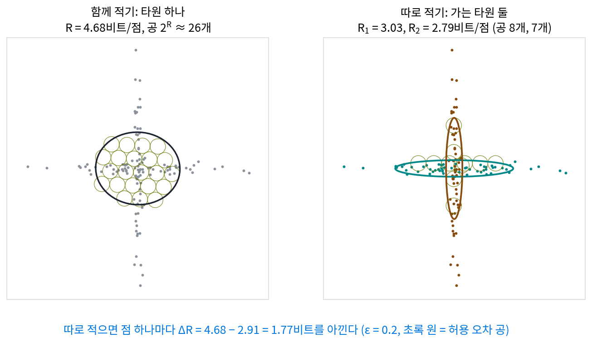
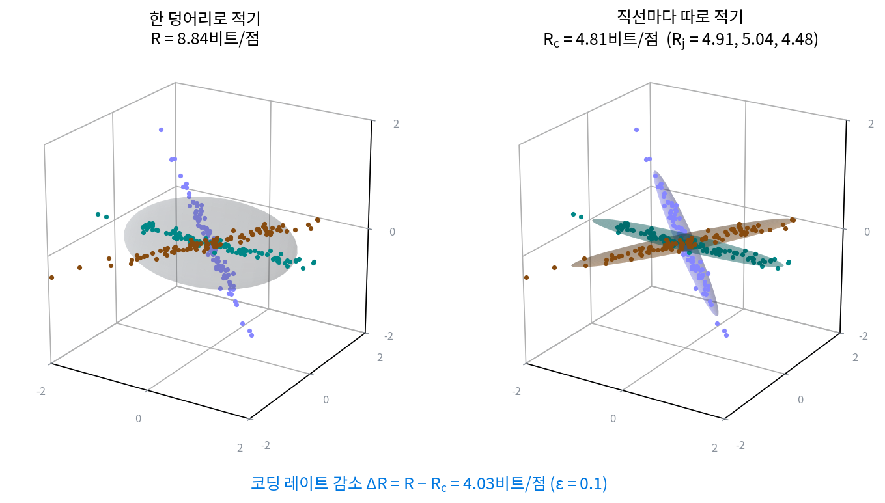
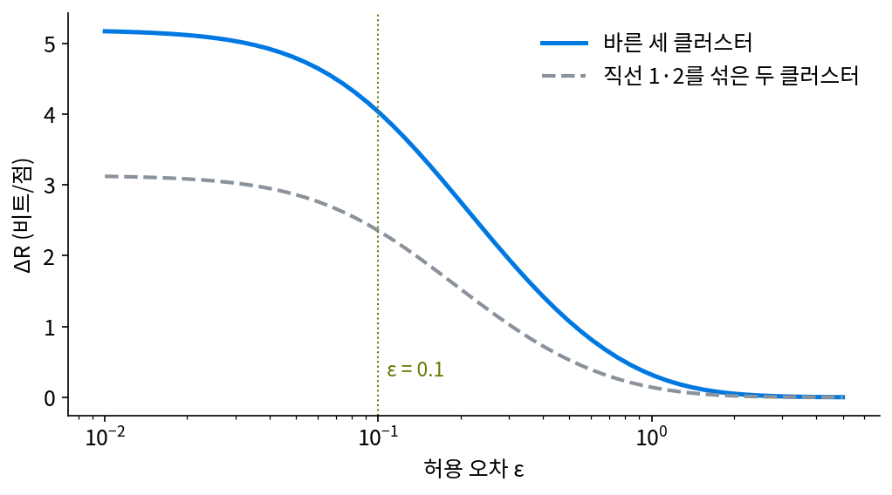
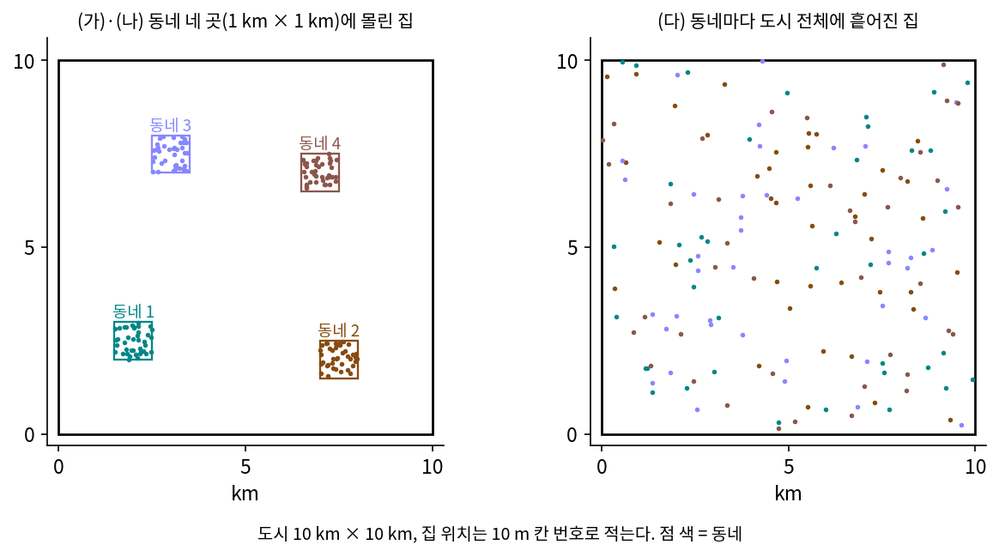
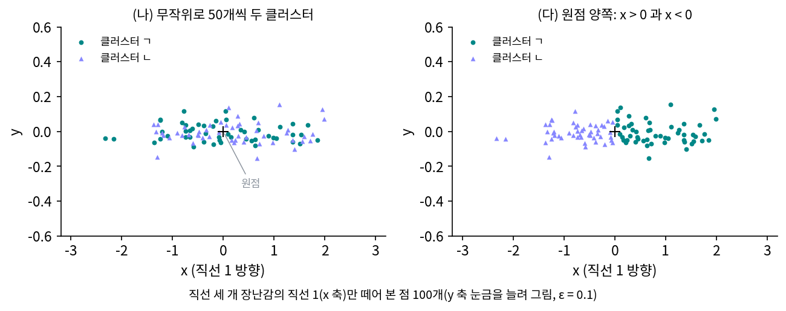
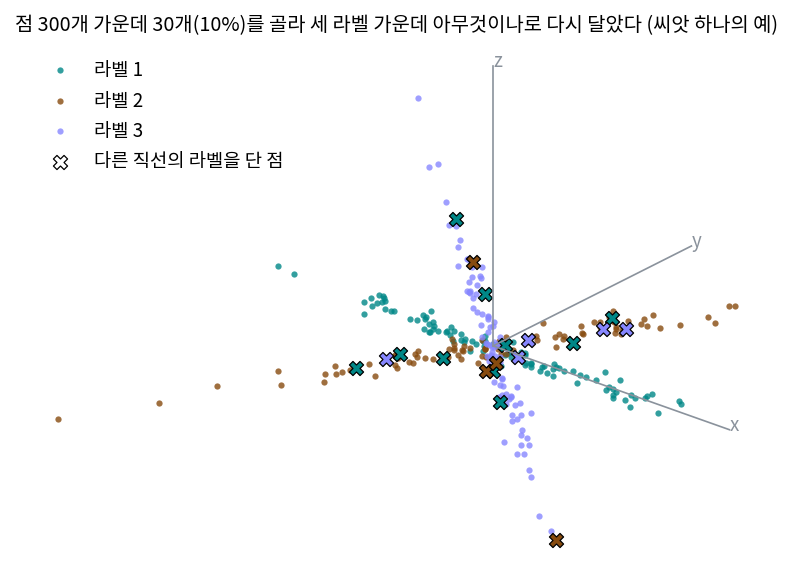

코딩 레이트와 코딩 레이트 감소: 클러스터별로 적으면 짧아진다
코딩 레이트 감소: 클러스터별로 적으면 아끼는 비트
코딩 레이트는 점 구름을 타원 하나로 보고 그 부피를 재는데, 점들이 3차원에서 서로 다른 직선 세 개 근처에 모여 있다면 어떨까? 타원 하나로 감싸면 직선 사이의 빈 공간까지 부피에 들어간다. 각 점이 어느 직선에 속하는지 안다면, 같은 직선의 점들을 한 클러스터로 묶어 클러스터마다 가는 타원으로 따로 감싸는 편이 낫겠다. 그렇게 하면 얼마나 아끼고, 그 아낀 양이 「나누기가 얼마나 좋은가」를 재는 잣대가 될 수 있을까?
역사: 「나눈다」는 것은 무엇인가
2007년 마(Yi Ma)·데르크센(Harm Derksen)·홍(Wei Hong)·라이트(John Wright)는 『IEEE Transactions on Pattern Analysis and Machine Intelligence』 29권 9호에 논문 한 편을 냈다. 제목은 「손실 코딩과 압축으로 여러 변수가 섞인 자료 나누기(Segmentation of Multivariate Mixed Data via Lossy Data Coding and Compression)」다. 논문은 물음부터 던진다. 자료를 「나눈다」는 것은 수학적으로 무슨 뜻인가, 나누기의 기준은 무엇이어야 하는가, 나눠서 얻는 것과 잃는 것은 어떻게 재는가, 애초에 왜 나누는 것이 옳은가.
그들의 답은 코드 길이였다. 허용 오차를 정해 두고, 섞인 자료를 한 덩어리로 적을 때와 클러스터별로 나눠 적을 때의 비트를 비교해서, 나눠 적어 짧아질 때 나누는 것이 옳다고 본다. 코딩 레이트의 식 ½ log₂ det(I + d/(nε²) ZZᵀ)도 이 논문이 공 세기로 유도한 것이고(밑을 2로 둔 비트 단위다), 논문에는 서로 직교하는 벡터 둘을 따로 적을 때와 함께 적을 때 필요한 공의 수를 비교하는 그림이 들어 있다.


섞인 점을 나누는 건 지금은 클러스터링 함수 하나 부르면 끝나잖아요. 「나눈다는 게 무슨 뜻인가」부터 물을 일이었어요?

그 함수마다 「잘 나눴다」의 기준이 달라요. 민준 학생, 점들이 직선 위에 거의 붙어 있을 때 그 클러스터를 정규분포로 보고 엔트로피 ½ log₂(2πeσ²)를 재면 어떻게 되죠?

음, 직선에서 벗어난 방향의 σ가 0에 가까우니까… 로그가 음수로 한없이 내려가요.

그러면 얇은 클러스터 둘을 견주려 해도 둘 다 아래로 끝없이 내려가니까, 어느 나누기가 더 짧은지 따질 수가 없잖아.

그래요. 클러스터가 얇을수록 확률밀도로 재는 잣대가 먼저 망가져요. 2007년 논문은 그 대신 허용 오차를 먼저 정해 두고 공을 셌어요.

허용 오차보다 얇은 방향은 0비트 근처에서 멈추니까 비트가 유한하게 나오겠네요. 그럼 직선 세 개 근처의 점을 한 덩어리로 셀 때와 직선별로 셀 때, 공 수는 얼마나 달라요?
직선 세 개 근처의 점 300개
3차원에서 원점을 지나는 직선 세 개를 골랐는데, 사잇각은 직선 1과 2가 60°, 1과 3이 48.4°, 2와 3이 90°다. 직선마다 점 100개를, 직선 방향으로는 표준정규분포로 흩고 직선에서 벗어난 쪽으로는 좌표마다 표준편차 0.05의 노이즈를 더해 뽑았다(씨앗 0, sources/rate-reduction/s2_reduction.py). 직선은 클러스터 하나가 정확히 한 방향만 쓰는 가장 단순한 모양이기 때문에 장난감으로 골랐다. 허용 오차는 노이즈와 비슷한 크기인 ε = 0.1로 둔다.
300개를 한 덩어리로 적으면 점 하나에 8.839비트가 들지만, 직선별로 적으면 4.908, 5.038, 4.478비트다. 한 덩어리의 2차 모멘트(원점에서 잰 분산 행렬 1/n · ZZᵀ)는 세 방향 모두로 퍼져 있지만(고윳값 0.561, 0.281, 0.045), 직선 하나의 2차 모멘트는 한 방향만 크고 나머지 둘은 노이즈 크기(0.003 안팎)라 두 방향이 거의 비트를 내지 않기 때문이다. 공으로 치면 한 덩어리는 2의 8.839제곱, 약 458개의 공을 쓰고, 직선 하나는 22~33개를 쓴다.
클러스터별 비트를 한 점의 평균으로 맞추려면 클러스터마다 점의 비율을 곱해 더한다. 여기서는 셋 다 100/300이니 (4.908 + 5.038 + 4.478)/3 = 4.808비트다. 한 덩어리와의 차 8.839 − 4.808 = 4.031비트가 클러스터별로 적어서 점 하나마다 아끼는 비트이고, 점 300개를 모두 적으면 1,209비트를 아낀다. 이 차를 코딩 레이트 감소 (클러스터별로 따로 적어서 아끼는 비트, coding rate reduction)라 한다.

나누기를 잘못하면 어떻게 될까? 세 가지로 해 보았다(같은 ε = 0.1).
| 나누기 | ΔR (비트/점) |
|---|---|
| 바른 세 클러스터 | 4.031 |
| 직선 1과 2를 한 클러스터로 섞고 직선 3만 따로 | 2.353 |
| 클러스터는 셋이지만 직선 1과 2의 점을 절반씩 맞바꿈 | 2.356 |
| 직선을 보지 않고 xy 평면의 방위각으로 세 부채꼴 | 2.221 |
| 한 덩어리 (나누지 않음) | 0 |
섞인 클러스터는 두 방향으로 퍼진 판이 되어 그 클러스터의 비트가 늘고, ΔR이 거의 반으로 준다. 클러스터 수가 같아도 내용이 틀리면 마찬가지다. 아끼는 비트가 많을수록 클러스터 하나하나가 납작하다는 뜻이고, 그래서 ΔR은 나누기의 좋고 나쁨을 재는 잣대가 된다.
허용 오차에 따라서도 달라진다. 바른 나누기의 ΔR은 ε = 0.5에서 1.070, 1에서 0.318, 2에서 0.051비트로 줄어든다. 눈금이 직선 사이의 거리만큼 커지면 세 직선이 흐릿한 한 덩어리로 보여서 나눠 적어 아끼는 비트가 사라진다. 거꾸로 ε를 0.02까지 줄이면 5.114비트로 늘지만 한없이 늘지는 않는다. 직선의 노이즈 두께까지 적어야 하는 눈금에서는 클러스터 하나도 세 방향을 모두 쓰기 때문이다.

ML에서: 분류기 없이 표현을 채점하기
학습한 신경망의 표현이 좋은지 보려면 보통 그 위에 선형 분류기를 하나 더 학습시켜 정확도를 잰다. ΔR은 분류기를 학습시키지 않고 표현과 라벨만으로 바로 계산된다. 라벨대로 나눠 적어서 많이 아끼면 그 표현에서 같은 라벨끼리는 납작하게 모이고 다른 라벨끼리는 다른 방향을 쓴다는 뜻이다. 계산에 드는 것은 d × d 행렬의 행렬식 몇 개뿐이며, 라벨 일부가 틀린 자료에서 이 잣대가 어떻게 움직이는지는 아래 문제 6에서 본다.
문제 4. 동네별로 적는 주소
가로세로 10 km인 도시에서 집 위치를 10 m 칸 번호로 적는데, 집은 모두 동네 네 곳에 몰려 있고 동네마다 가로세로 1 km이며 집 수가 같다. (가) 도시 전체의 칸 번호로 적으면 집 하나에 몇 비트인가? (나) 동네 번호와 동네 안의 칸 번호로 적으면 몇 비트이고, 몇 비트를 아끼는가? (다) 동네 네 곳이 저마다 도시 전체에 흩어져 있다면?

(가)는 한 변에 1,000칸이라 2 log₂ 1,000 = 19.932비트예요. (나)는 동네 안이 한 변 100칸이라 2 log₂ 100 = 13.288비트. 6.644비트 아껴요.
민준 학생, 받는 쪽은 13.288비트만 받고 집을 찾을 수 있나요?
아, 어느 동네인지를 모르면 못 찾아요. 동네가 넷이니까 2비트를 더해서 15.288비트, 아끼는 건 4.644비트예요.

(다)는 동네마다 도시 전체만큼 퍼져 있으니 동네 안의 칸 번호도 19.932비트야. 동네 번호 2비트까지 더하면 21.932비트라서 오히려 2비트 손해. 나눠도 클러스터마다 퍼진 넓이가 줄지 않으면 아낄 게 없어.

코딩 레이트 감소랑 같은 구조네요. 클러스터별 넓이가 전체 넓이보다 작아야 아끼고, 클러스터가 전체만큼 퍼져 있으면 차가 0이에요. 그런데 동네 번호 2비트는 ΔR 식에는 없는 것 같아요.

서연 학생, 잘 봤어요. ΔR은 라벨을 받는 쪽이 이미 안다고 보고 잰 값이에요. 라벨을 모를 때 그 비트를 어떻게 셈에 넣을지는 잠시 열어 둡시다.

조교가 과제 파일을 「분반 번호 + 분반 안 번호」로 정리하는 것도 「동네 번호 + 동네 안 칸 번호」 주소와 짜임이 같아요. 분반 번호가 동네 번호, 분반 안 번호가 동네 안 칸 번호예요. 분반 번호를 붙이는 수고(라벨 비트)가 들어도 찾기는 훨씬 빨라요.
문제 5. 무게 없이 더하면, 같은 직선을 나누면
직선 세 개 장난감(점 300개, ε = 0.1)에서 직선별 코딩 레이트는 4.908, 5.038, 4.478비트이고, 한 덩어리는 8.839비트다. (가) 클러스터별 코딩 레이트를 점 비율의 무게 없이 그냥 더해 한 덩어리와 비교하면 어떻게 되는가? (나) 직선 1의 점 100개만 따로 떼어 무작위로 50개씩 두 클러스터로 나누면 ΔR은 얼마쯤일까? (다) 직선 1을 원점의 양쪽(x > 0인 점과 x < 0인 점)으로 나누면?

(가)는 4.908 + 5.038 + 4.478 = 14.424비트예요. 8.839에서 빼면 −5.585비트. 나눠 적으면 더 길어진다는 건가요?
민준 학생, 14.424비트는 무엇을 적는 비트예요?

직선 1의 점 하나, 직선 2의 점 하나, 직선 3의 점 하나를 한 개씩 적는 비트예요. 점 세 개 값이네요. 점 하나의 평균으로 맞추려면 비율 1/3씩 곱해야 해요.
(나)는 같은 직선을 둘로 나눈 거니까 두 클러스터 모두 같은 방향 하나를 써. 부피가 안 줄어드니까 ΔR은 0 근처일 거야. 계산하면 0.012비트.

(다)는 원점 양쪽으로 갈랐으니까 반직선 두 개잖아요. 방향이 정반대인 두 클러스터니까 많이 아낄 것 같은데요?
계산하면 0.025비트야. 거의 안 아껴. 코딩 레이트는 원점에서의 2차 모멘트로 재니까, 방향 u와 −u는 같은 직선이야. 반으로 갈라도 각 클러스터가 쓰는 방향은 여전히 u 하나지.
그래요. 코딩 레이트가 보는 것은 점들이 차지한 방향(부분공간)이에요. 같은 부분공간 안에서 어떻게 가르든 아낄 것이 거의 없어요.

선형대수 시간에 배운 대로 x축의 양의 절반과 음의 절반은 같은 1차원 부분공간을 펼쳐요. 원점 양쪽으로 가른 직선 1이 바로 그 경우네요.
문제 6. 라벨을 잘못 단 자료
직선 세 개 장난감의 라벨 가운데 일부를 골라, 세 클러스터 가운데 아무것이나로(제자리일 수도 있다) 무작위로 바꿔 달았다. 씨앗 20개로 평균을 냈더니 ΔR은 바꾼 비율 0%에서 4.031, 10%에서 2.385, 30%에서 1.165, 60%에서 0.371, 100%에서 0.058비트였다(ε = 0.1). 왜 10%만 바꿔도 크게 떨어지는가? 라벨에 따라 ΔR이 움직이는 성질을 학습에 어떻게 쓸 수 있을까?

10%를 골랐으니까 실제로 틀린 라벨은 그 3분의 2, 7%쯤이에요. 7%가 틀렸는데 아끼는 비트가 4.031에서 2.385로 40% 넘게 줄었어요. 비율보다 훨씬 많이 줄어요.
직선 1의 클러스터에 직선 2의 점이 몇 개 들어오면, 그 클러스터의 타원체는 어떻게 되죠?
몇 개만 들어와도 직선 2 방향으로 퍼짐이 생기겠네요.
그 방향은 원래 비트를 얼마나 내고 있었죠?
0.05 두께의 노이즈 방향이라 거의 안 냈어요. 거기에 눈금보다 큰 퍼짐이 생기면 그 방향이 비트를 내기 시작하고요.

그래도 7%면 조금인데, 왜 40%나 떨어져?
½ log₂(1 + 3λ/ε²)는 λ가 0에서 조금만 커져도 빨리 오르잖아. 그러니까 처음 몇 개의 틀린 점이 가장 비싸.

그럼 100%면 라벨이 아무 뜻이 없으니까 0이어야 하는데 0.058이 남은 건요?
점 100개를 무작위로 셋으로 나눠도 클러스터마다 퍼짐이 조금씩 달라요. 샘플이 유한해서 생기는 작은 값이에요. 씨앗마다 0.021에서 0.167까지 흔들렸어요. 자, 그러면 이 잣대로 라벨이 틀린 점을 찾을 수 있을까요?

점 하나씩 라벨을 다른 클러스터로 옮겨 보고 ΔR이 커지면 원래 라벨이 의심스러운 거네요. 틀린 점은 클러스터의 타원체를 다른 방향으로 넓히니까 빼면 많이 아껴요.
조별 사진에 다른 조 사람이 한 명 끼면 사진 틀을 그 사람까지 넣게 넓혀야 하잖아요. 한 명이 사진 전체를 키워요.